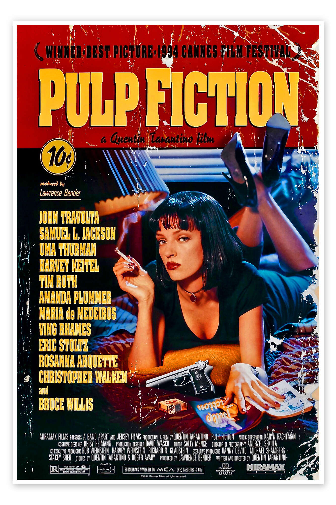

Pulp Fiction
Introduction
Pulp Fiction
In a world where crime and redemption collide, two hitmen, Vincent Vega and Jules Winnfield, embark on a series of misadventures in Los Angeles. The duo's complex moral code is put to the test when they become entangled in a web of deceit, loyalty, and betrayal. Meanwhile, a pair of diner bandits, Marsellus Wallace and his partners in crime, are hot on their heels, leaving a trail of bloodshed, excitement, and philosophical debates in their wake. With its intricate plot and memorable characters, Pulp Fiction is a cinematic gem that will keep you on the edge of your seat.
The Story Unfolds
Vincent and Jules' Adventure Begins
As Vincent and Jules, accompanied by Marsellus' henchman, Mia Wallace, drive through the night sky, they find themselves in a precarious situation. Their quest for redemption is put to the test when they become embroiled in a series of events that will change their lives forever. From the infamous "gold watch" conversation to the infamous "Big Kahuna Burger" moment, every scene, character, and plot twist is expertly woven together to create a complex tapestry of storylines. Pulp Fiction's unique blend of humor, violence, and philosophical introspection makes it a true classic.
The Conclusion
Redemption and Retribution
As the pieces of the puzzle fall into place, Vincent and Jules must confront their darkest fears and desires in a final act of redemption. The film's non-linear narrative structure is expertly revealed, showing the interconnected web of relationships that make up Pulp Fiction. With its memorable characters, witty dialogue, and timeless themes, Quentin Tarantino's masterpiece continues to captivate audiences with its unique blend of art and entertainment.